The marketing site
Where the redesign makes its pitch
The landing page frames SmartChat for the people who'd never think to go looking for a floating chat window: professionals, students, and anyone who leans on voice. It leads with the multitasking story, then the speech features, then the proof.
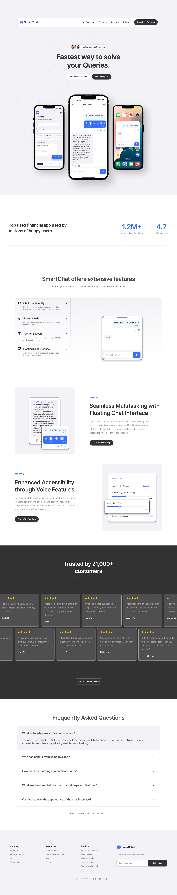
Scroll inside the window ↑
01 · Main frustration
Powerful voice features, buried where no one looked
This was a self-directed redesign. I picked an AI chat app whose speech-to-text and text-to-speech worked fine on paper but were lost inside a cluttered interface, and treated closing that gap as the brief.
People who depend on hands-free communication, or who just wanted to keep working in another app, gave up on the voice features entirely. Scope: concept redesign, iOS, solo, four weeks.
02 · The approach
Make the voice-first path the obvious one
I rebuilt SmartChat around a floating chat window and plain, visible voice controls, and cut the interface back so any key action takes two or three taps, not a hunt through menus.
Goals that stayed on screen the whole time
Product goal: integrate speech-to-text and text-to-speech so people can talk to the AI while using other apps. Business goal: widen the audience with an AI chat app that's genuinely usable for professionals, students, and people with accessibility needs. Keeping both in view kept every decision pointed at accessibility, ease of use, and multitasking.
What a win would look like, the bar I held every screen against:
For the business
- Higher engagement
- Room for premium features
- Stronger market position
- A brand known for accessible communication tech
For users
- Real speech-to-text accessibility
- An interface built for multitasking
- A faster, more engaging way to communicate
03 · Process
How the solution came together
Five phases, from sitting with people who use voice tools they already had, to testing the final screens with a small group.
Watching how people already talk to AI
I sat with a handful of people as they used ChatGPT's text-to-speech and Copilot's speech-to-text, watching how they switched between apps. The features helped, but there was no seamless multitasking: people wanted to stay in a conversation without losing control of everything else. That reframed accessibility for me: not a feature, but a core experience need.
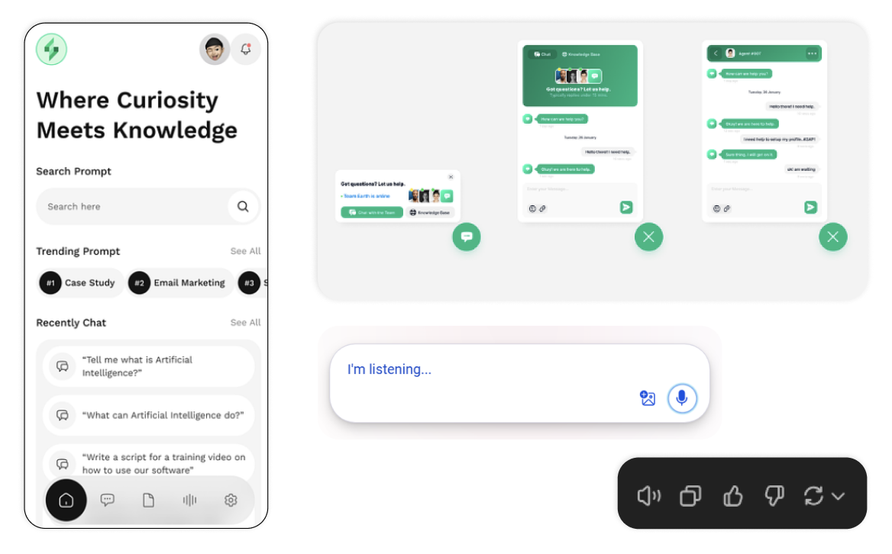
Mapping a path that holds up while multitasking
I mapped the core interaction flow for both voice and text, and put a floating icon in the bottom-right so SmartChat could open without interrupting whatever was already on screen. This is also where I defined how speech recognition gets triggered and how responses come back: fast, and in a format you can read or hear.
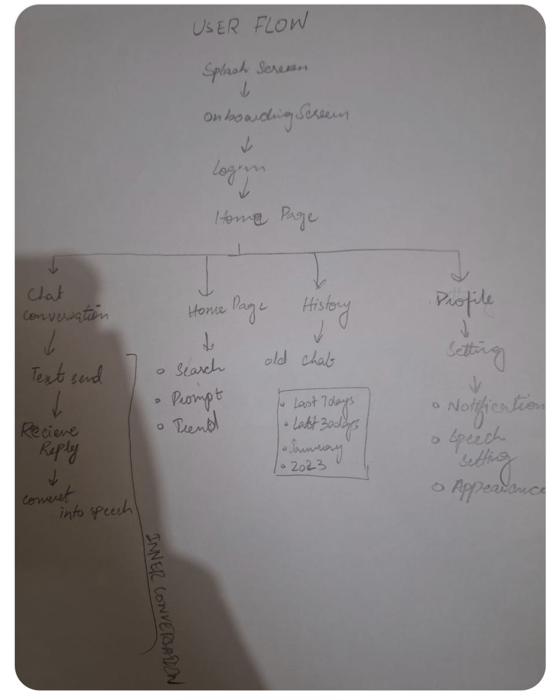
Testing rough ideas before polishing the wrong one
Low-fidelity prototyping let me check assumptions cheaply. One idea that stuck: a small speaker icon under every message, making text-to-speech discoverable with no tooltip. I leaned on Shneiderman's principles throughout: consistency, user control, and shortcuts for people who'd use this every day.
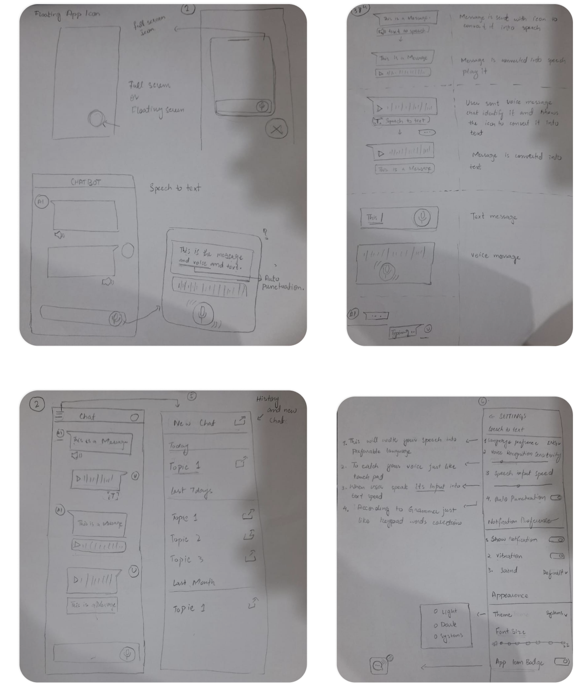
A window that resizes to the conversation
The high-fidelity screens came with a full component set and specs. The key call: replace the fixed-height floating window with one that grows about 20% with the conversation, so there's more room when you need it and no clutter when you don't. Quick voice messaging came out of this stage too.
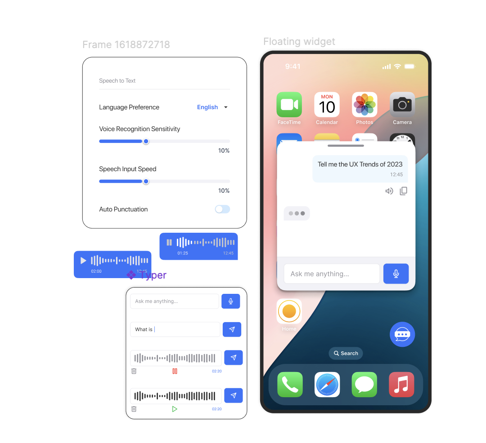
What testing actually changed
I ran a small round of usability and preference testing with a handful of people, comparing layouts and where the voice controls sat. It changed real things: light mode read better for most of them, so it became the default over my instinct for dark; History moved into the bottom nav; and I lightened the new-chat button so it stopped competing with the floating icon. A notification bell went in for replies that land after you've stepped away. People also reached the voice features faster than in the old layout, though at this sample size I'd call that a signal, not a proven number.
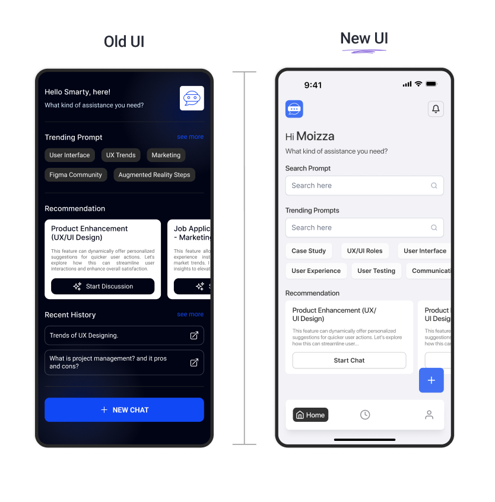
04 · Style
One blue, built to be legible
Logo
The mark is a speech bubble with a three-dot strip (a message in progress and the AI thinking) on a clean circular base. Bright blue for trust and clarity, grid-aligned so it holds up from app icon to floating widget to billboard.
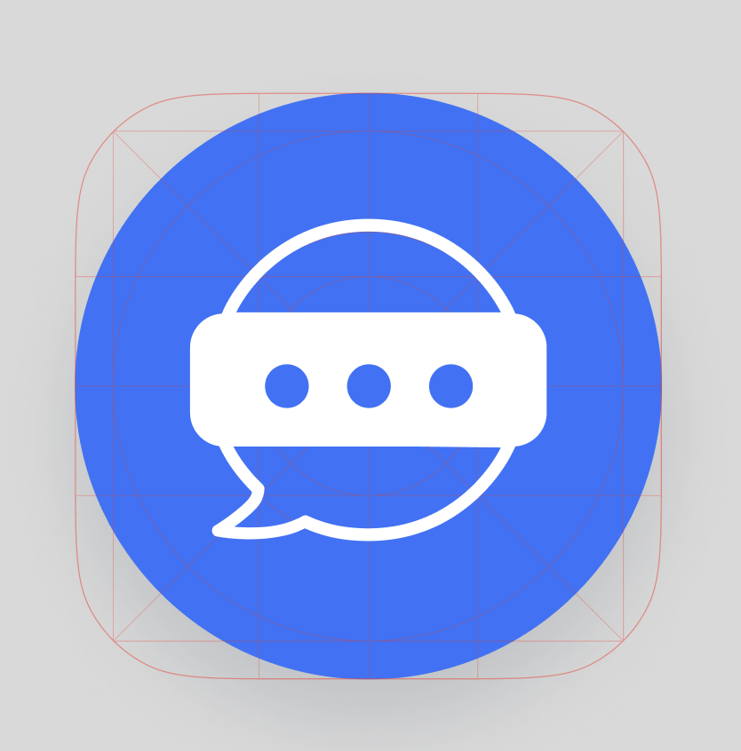
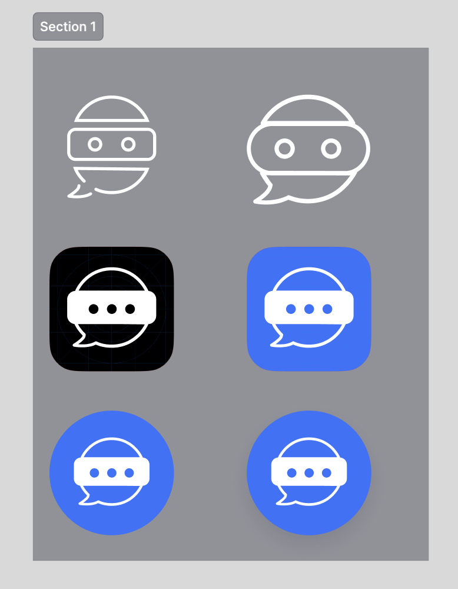
Colour
Six roles, each with a job: brand blue for identity and primary actions, a neutral secondary, grey for placeholders and dividers, dark grey for body text and contrast, and two gradients: blue for interactive highlights, greyscale for depth. Each blue and grey step is graded for contrast.
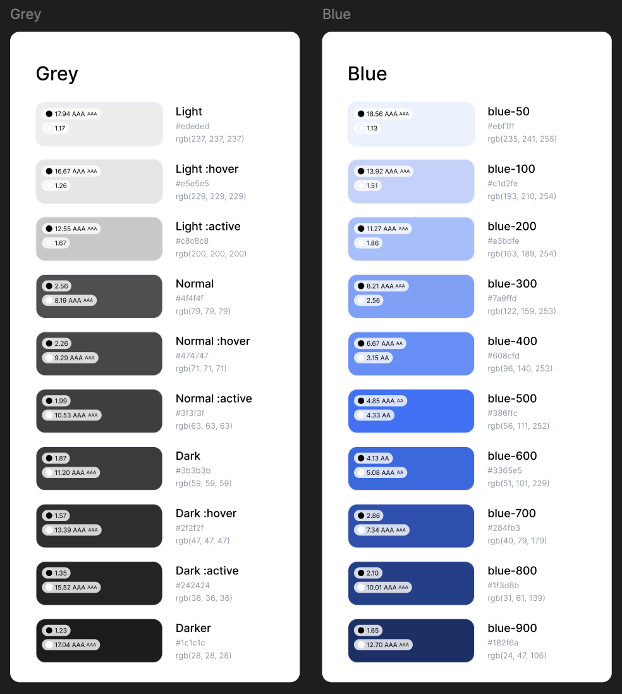
Typography
SF Pro Display across the whole interface: one typeface, tuned for reading at small sizes.
05 · Features
The full feature set
Ten features made it into the concept. Three carried it: the floating chat that overlays other apps, the speaker icon on every message, and speech-to-text built for hands-free use. The rest support those.
Trendy prompts
Ready-to-use AI suggestions for creativity, productivity, and everyday tasks.
Speech-to-text
Turns voice into accurate text for hands-free communication.
Text-to-speech
Reads messages aloud for visual needs or when you're on the move.
Floating icon
Bottom-right, always there, one tap from any screen.
Floating chat
A resizable window that overlays other apps so you can keep working.
History
A dedicated tab to revisit and continue past conversations.
Font adjustment
Set text size for comfortable reading.
Theme customization
Light and dark modes for any environment.
Recommendations
Personalized suggestions based on how you use the app.
Voice adjustments
Tune pitch, speed, and tone for a more natural voice.
06 · The screens
Walking through the redesign
Floating icon & chat
The draggable window lets you talk to SmartChat without leaving the app you're in. That's the whole point of the redesign, in one interaction.
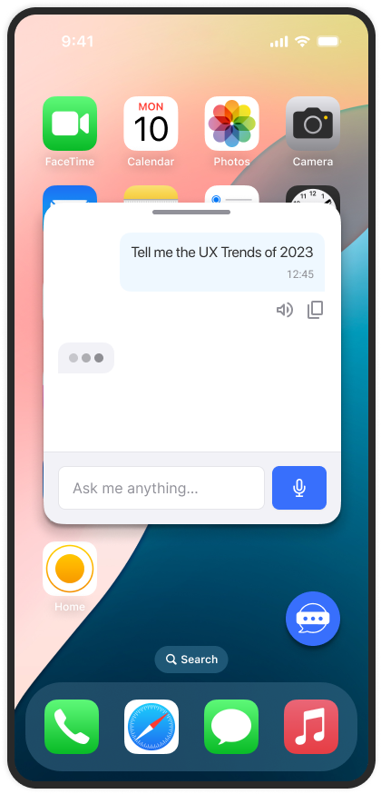
Home screen
The hub: start a chat, jump into history, reach settings. Search and trending prompts sit up top; recommendations follow.
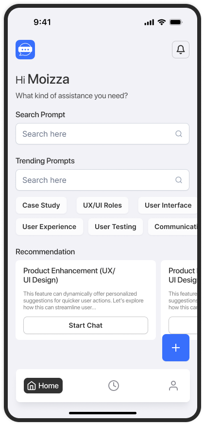
Conversation screen
Type or speak; get a reply as text or voice. A speaker icon under every message makes text-to-speech a one-tap thing.
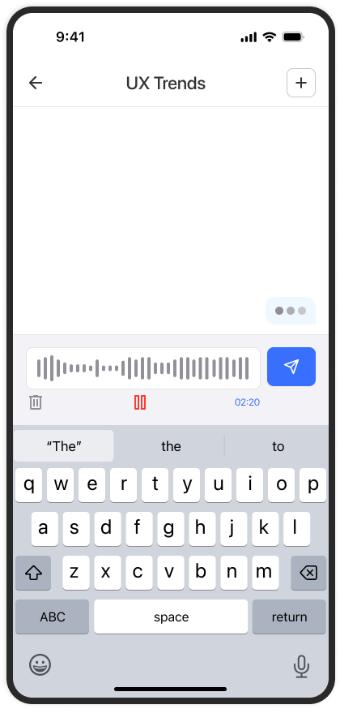
History screen
Past conversations, grouped by recency, so you can pick up exactly where you left off.
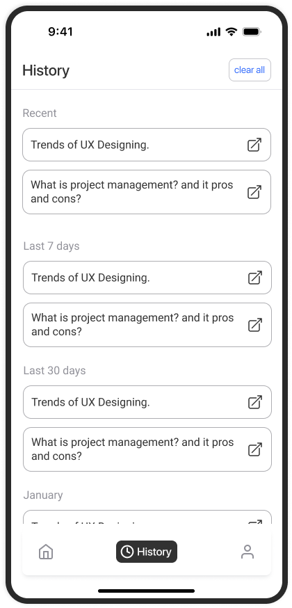
Profile screen
Account details and the essentials: privacy, terms, logout, and the toggle for the floating badge icon.
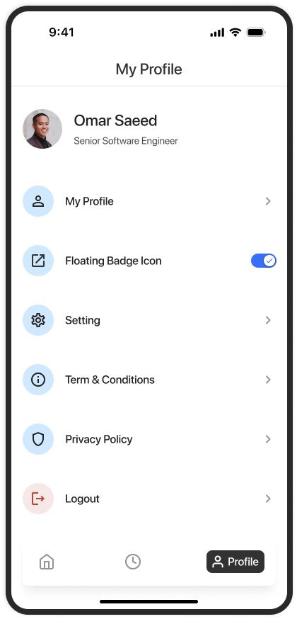
Setting screen
Speech preferences, notification behaviour, theme, and font size: the controls that let people tailor SmartChat to how they work.
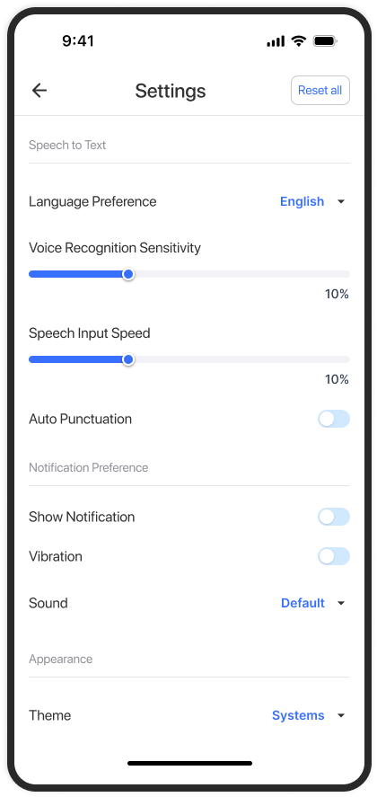
07 · Reflection
What this project taught me
- Accessibility framed as a core experience need, not a feature, changed every decision that came after it.
- The smallest affordance can carry a feature: in testing, the speaker icon on each message did more for text-to-speech discovery than any onboarding screen would have.
- Testing beat my taste. I wanted dark mode as the default; people read light mode more easily, so light mode won.
- Next time I'd lock in one measurable target before designing, like a task time or completion rate, so the redesign has a number to be judged against, not just a story.
- Designing a floating window means designing for the app underneath it, not just your own screen.